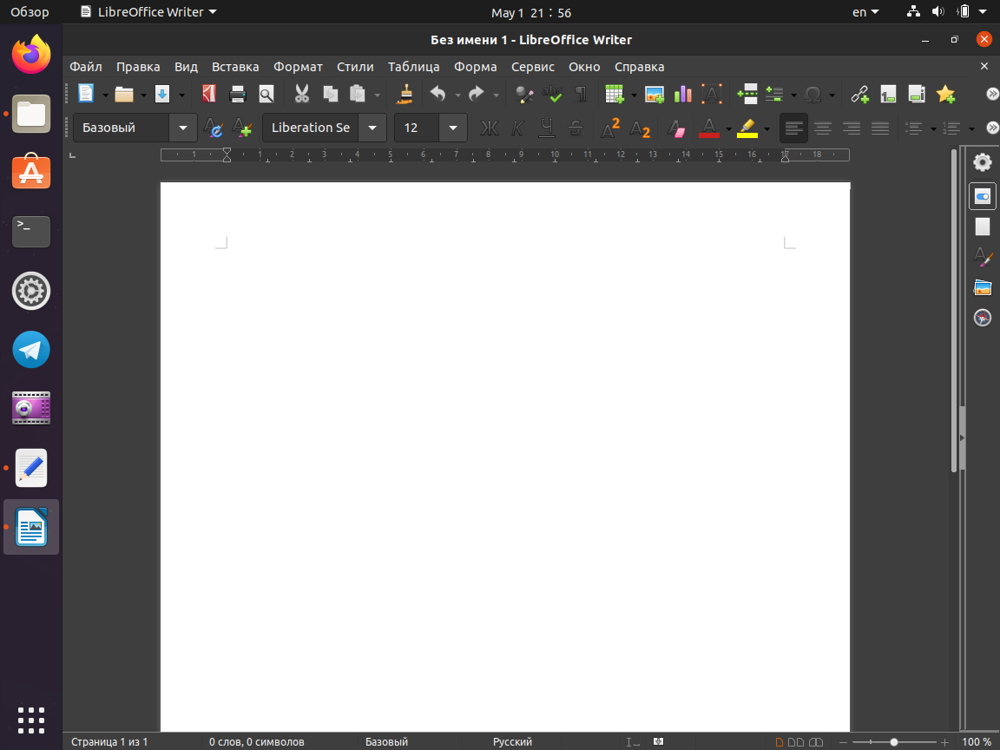
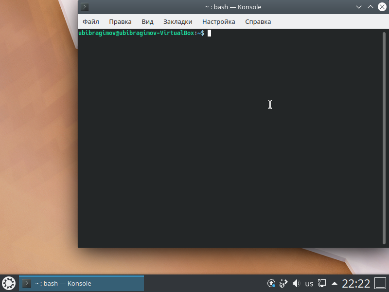

<!DOCTYPE html>
<html>
<head>
<title>lab004.md</title>
<meta http-equiv="Content-type" content="text/html;charset=UTF-8">

<style>
/* https://github.com/microsoft/vscode/blob/master/extensions/markdown-language-features/media/markdown.css */
/*---------------------------------------------------------------------------------------------
 *  Copyright (c) Microsoft Corporation. All rights reserved.
 *  Licensed under the MIT License. See License.txt in the project root for license information.
 *--------------------------------------------------------------------------------------------*/

body {
	font-family: var(--vscode-markdown-font-family, -apple-system, BlinkMacSystemFont, "Segoe WPC", "Segoe UI", "Ubuntu", "Droid Sans", sans-serif);
	font-size: var(--vscode-markdown-font-size, 14px);
	padding: 0 26px;
	line-height: var(--vscode-markdown-line-height, 22px);
	word-wrap: break-word;
}

#code-csp-warning {
	position: fixed;
	top: 0;
	right: 0;
	color: white;
	margin: 16px;
	text-align: center;
	font-size: 12px;
	font-family: sans-serif;
	background-color:#444444;
	cursor: pointer;
	padding: 6px;
	box-shadow: 1px 1px 1px rgba(0,0,0,.25);
}

#code-csp-warning:hover {
	text-decoration: none;
	background-color:#007acc;
	box-shadow: 2px 2px 2px rgba(0,0,0,.25);
}

body.scrollBeyondLastLine {
	margin-bottom: calc(100vh - 22px);
}

body.showEditorSelection .code-line {
	position: relative;
}

body.showEditorSelection .code-active-line:before,
body.showEditorSelection .code-line:hover:before {
	content: "";
	display: block;
	position: absolute;
	top: 0;
	left: -12px;
	height: 100%;
}

body.showEditorSelection li.code-active-line:before,
body.showEditorSelection li.code-line:hover:before {
	left: -30px;
}

.vscode-light.showEditorSelection .code-active-line:before {
	border-left: 3px solid rgba(0, 0, 0, 0.15);
}

.vscode-light.showEditorSelection .code-line:hover:before {
	border-left: 3px solid rgba(0, 0, 0, 0.40);
}

.vscode-light.showEditorSelection .code-line .code-line:hover:before {
	border-left: none;
}

.vscode-dark.showEditorSelection .code-active-line:before {
	border-left: 3px solid rgba(255, 255, 255, 0.4);
}

.vscode-dark.showEditorSelection .code-line:hover:before {
	border-left: 3px solid rgba(255, 255, 255, 0.60);
}

.vscode-dark.showEditorSelection .code-line .code-line:hover:before {
	border-left: none;
}

.vscode-high-contrast.showEditorSelection .code-active-line:before {
	border-left: 3px solid rgba(255, 160, 0, 0.7);
}

.vscode-high-contrast.showEditorSelection .code-line:hover:before {
	border-left: 3px solid rgba(255, 160, 0, 1);
}

.vscode-high-contrast.showEditorSelection .code-line .code-line:hover:before {
	border-left: none;
}

img {
	max-width: 100%;
	max-height: 100%;
}

a {
	text-decoration: none;
}

a:hover {
	text-decoration: underline;
}

a:focus,
input:focus,
select:focus,
textarea:focus {
	outline: 1px solid -webkit-focus-ring-color;
	outline-offset: -1px;
}

hr {
	border: 0;
	height: 2px;
	border-bottom: 2px solid;
}

h1 {
	padding-bottom: 0.3em;
	line-height: 1.2;
	border-bottom-width: 1px;
	border-bottom-style: solid;
}

h1, h2, h3 {
	font-weight: normal;
}

table {
	border-collapse: collapse;
}

table > thead > tr > th {
	text-align: left;
	border-bottom: 1px solid;
}

table > thead > tr > th,
table > thead > tr > td,
table > tbody > tr > th,
table > tbody > tr > td {
	padding: 5px 10px;
}

table > tbody > tr + tr > td {
	border-top: 1px solid;
}

blockquote {
	margin: 0 7px 0 5px;
	padding: 0 16px 0 10px;
	border-left-width: 5px;
	border-left-style: solid;
}

code {
	font-family: Menlo, Monaco, Consolas, "Droid Sans Mono", "Courier New", monospace, "Droid Sans Fallback";
	font-size: 1em;
	line-height: 1.357em;
}

body.wordWrap pre {
	white-space: pre-wrap;
}

pre:not(.hljs),
pre.hljs code > div {
	padding: 16px;
	border-radius: 3px;
	overflow: auto;
}

pre code {
	color: var(--vscode-editor-foreground);
	tab-size: 4;
}

/** Theming */

.vscode-light pre {
	background-color: rgba(220, 220, 220, 0.4);
}

.vscode-dark pre {
	background-color: rgba(10, 10, 10, 0.4);
}

.vscode-high-contrast pre {
	background-color: rgb(0, 0, 0);
}

.vscode-high-contrast h1 {
	border-color: rgb(0, 0, 0);
}

.vscode-light table > thead > tr > th {
	border-color: rgba(0, 0, 0, 0.69);
}

.vscode-dark table > thead > tr > th {
	border-color: rgba(255, 255, 255, 0.69);
}

.vscode-light h1,
.vscode-light hr,
.vscode-light table > tbody > tr + tr > td {
	border-color: rgba(0, 0, 0, 0.18);
}

.vscode-dark h1,
.vscode-dark hr,
.vscode-dark table > tbody > tr + tr > td {
	border-color: rgba(255, 255, 255, 0.18);
}

</style>

<style>
/* Tomorrow Theme */
/* http://jmblog.github.com/color-themes-for-google-code-highlightjs */
/* Original theme - https://github.com/chriskempson/tomorrow-theme */

/* Tomorrow Comment */
.hljs-comment,
.hljs-quote {
	color: #8e908c;
}

/* Tomorrow Red */
.hljs-variable,
.hljs-template-variable,
.hljs-tag,
.hljs-name,
.hljs-selector-id,
.hljs-selector-class,
.hljs-regexp,
.hljs-deletion {
	color: #c82829;
}

/* Tomorrow Orange */
.hljs-number,
.hljs-built_in,
.hljs-builtin-name,
.hljs-literal,
.hljs-type,
.hljs-params,
.hljs-meta,
.hljs-link {
	color: #f5871f;
}

/* Tomorrow Yellow */
.hljs-attribute {
	color: #eab700;
}

/* Tomorrow Green */
.hljs-string,
.hljs-symbol,
.hljs-bullet,
.hljs-addition {
	color: #718c00;
}

/* Tomorrow Blue */
.hljs-title,
.hljs-section {
	color: #4271ae;
}

/* Tomorrow Purple */
.hljs-keyword,
.hljs-selector-tag {
	color: #8959a8;
}

.hljs {
	display: block;
	overflow-x: auto;
	color: #4d4d4c;
	padding: 0.5em;
}

.hljs-emphasis {
	font-style: italic;
}

.hljs-strong {
	font-weight: bold;
}
</style>

<style>
/*
 * Markdown PDF CSS
 */

 body {
	font-family: -apple-system, BlinkMacSystemFont, "Segoe WPC", "Segoe UI", "Ubuntu", "Droid Sans", sans-serif, "Meiryo";
	padding: 0 12px;
}

pre {
	background-color: #f8f8f8;
	border: 1px solid #cccccc;
	border-radius: 3px;
	overflow-x: auto;
	white-space: pre-wrap;
	overflow-wrap: break-word;
}

pre:not(.hljs) {
	padding: 23px;
	line-height: 19px;
}

blockquote {
	background: rgba(127, 127, 127, 0.1);
	border-color: rgba(0, 122, 204, 0.5);
}

.emoji {
	height: 1.4em;
}

code {
	font-size: 14px;
	line-height: 19px;
}

/* for inline code */
:not(pre):not(.hljs) > code {
	color: #C9AE75; /* Change the old color so it seems less like an error */
	font-size: inherit;
}

/* Page Break : use <div class="page"/> to insert page break
-------------------------------------------------------- */
.page {
	page-break-after: always;
}

</style>

<script src="https://unpkg.com/mermaid/dist/mermaid.min.js"></script>
</head>
<body>
  <script>
    mermaid.initialize({
      startOnLoad: true,
      theme: document.body.classList.contains('vscode-dark') || document.body.classList.contains('vscode-high-contrast')
          ? 'dark'
          : 'default'
    });
  </script>
<h2 id="%D1%82%D0%B8%D1%82%D1%83%D0%BB%D1%8C%D0%BD%D1%8B%D0%B9-%D0%BB%D0%B8%D1%81%D1%82">Титульный лист</h2>
<p>Отчёт по лабораторной работе №4
Ибрагимов Улугбек Ботырхонович</p>
<h2 id="%D1%86%D0%B5%D0%BB%D1%8C-%D1%80%D0%B0%D0%B1%D0%BE%D1%82%D1%8B">Цель работы</h2>
<p>Познакомиться с операционной системой Linux, получить практические навыки работы с консолью и некоторыми графическими менеджерами рабочих столов операционной системы.</p>
<h2 id="%D0%B7%D0%B0%D0%B4%D0%B0%D0%BD%D0%B8%D0%B5-%D0%B8-%D1%85%D0%BE%D0%B4-%D0%B2%D1%8B%D0%BF%D0%BE%D0%BB%D0%BD%D0%B5%D0%BD%D0%B8%D1%8F-%D1%80%D0%B0%D0%B1%D0%BE%D1%82%D1%8B">Задание и ход выполнения работы</h2>
<ol>
<li>Ознакомиться с теоретическим материалом.</li>
<li>Загрузить компьютер.</li>
<li>Перейти на текстовую консоль. Сколько текстовых консолей доступно на вашем компьютере?</li>
</ol>
<blockquote>
<p>Ответ: Одна текcтовая консоль доступна </p>
</blockquote>
<ol start="4">
<li>Перемещаться между текстовыми консолями. Какие комбинации клавиш необходимо при этом нажимать?</li>
</ol>
<blockquote>
<p>Ответ: <code>Ctrl + Alt + Fn</code> (F2 - F12)</p>
</blockquote>
<ol start="5">
<li>Зарегистрироваться в текстовой консоли операционной системы. Какой логин вы при этом использовали? Какие символы отображаются при вводе пароля?</li>
</ol>
<blockquote>
<p>Ответ: user: ubibragimov, passwd: ubuntu</p>
</blockquote>
<ol start="6">
<li>Завершить консольный сеанс. Какую команду или комбинацию клавиш необходимо для этого использовать?</li>
<li>Переключиться на графический интерфейс. Какую комбинацию клавиш для этого необходимо нажать?</li>
</ol>
<blockquote>
<p>Ответ: <code>Ctrl + Alt + F7</code></p>
</blockquote>
<ol start="8">
<li>Ознакомиться с менеджером рабочих столов. Как называется менеджер, запускаемый по умолчанию?</li>
</ol>
<blockquote>
<p>Ответ: GNOME 3, дополнительно есть возможность уставноить любые доступные DE</p>
</blockquote>
<ol start="9">
<li>Поочерёдно зарегистрироваться в разных графических менеджерах рабочих столов (GNOME, KDE, XFCE) и оконных менеджерах (Openbox). Продемонстрировать разницу между ними, сделав снимки экрана (скриншоты). Какие графические менеджеры установлены на вашем компьютере?</li>
</ol>
<blockquote>
<p>Ответ:   </p>
</blockquote>
<ol start="10">
<li>Изучить список установленных программ. Обратить внимание на предпочтительные программы для разных применений. Запустите поочерёдно браузер, текстовой редактор, текстовой процессор, эмулятор консоли.Укажите названия программ.</li>
</ol>
<blockquote>
<p>Ответ:








</p>
</blockquote>
<h2 id="%D0%B2%D1%8B%D0%B2%D0%BE%D0%B4%D1%8B">Выводы</h2>
<p>В ходе выполнения Лабораторной работы №4, были приобретены навыки по администрированию и взаимодействию с разными окружениями в операционной среде Linux.</p>
<h2 id="%D0%BE%D1%82%D0%B2%D0%B5%D1%82%D1%8B-%D0%BD%D0%B0-%D0%BA%D0%BE%D0%BD%D1%82%D1%80%D0%BE%D0%BB%D1%8C%D0%BD%D1%8B%D0%B5-%D0%B2%D0%BE%D0%BF%D1%80%D0%BE%D1%81%D1%8B">Ответы на контрольные вопросы</h2>
<ol>
<li>Что такое компьютерный терминал? Есть ли, по вашему мнению, у него преимущества перед графическим интерфейсом?</li>
</ol>
<blockquote>
<p>Ответ: Компьютерный терминал - посредник между человеком и машиной, человек дает команду терминалу в виде сивольных и числовых литерал, терминал переводит эти команды в понятный для машины язык (чаще всего Си, Ассемблер, иногда Rust), преимущества компьютерного терминала заключаются в моментальной реакции, простейший пример промышленный компьютер или бортовой компьютер космического корабля Союз-МС должен реагировать на команды оператора за доли секунды, тем более что графический интерфейс дожен рендериться, а в условиях космоса или промышленного оборудования растрата памяти и нагрузка процессора прямо противопоказана.</p>
</blockquote>
<ol start="2">
<li>Что такое входное имя пользователя?</li>
</ol>
<blockquote>
<p>Ответ: Операционная система Linux связывает входное имя с идентификатором пользователя в системе (UID - User ID)</p>
</blockquote>
<ol start="3">
<li>В каком файле хранятся пароли пользователей? В каком виде они хранятся?</li>
</ol>
<blockquote>
<p>Ответ: Файл <code>/etc/passwd</code> содержит учетные записи пользователей и пароли для входа в систему</p>
</blockquote>
<ol start="4">
<li>Где хранятся настройки пользовательских программ?</li>
</ol>
<blockquote>
<p>Ответ: Настройки программ находятся по пути: <code>~/.config/ (/home/user/.config/)</code></p>
</blockquote>
<ol start="5">
<li>Какое входное имя у администратора ОС Unix?</li>
</ol>
<blockquote>
<p>Ответ: UID Root = 0</p>
</blockquote>
<ol start="6">
<li>Имеет ли администратор доступ к настройкам пользователей?</li>
</ol>
<blockquote>
<p>Ответ: Да</p>
</blockquote>
<ol start="7">
<li>Каковы основные характеристики многопользовательской модели разграничения доступа?</li>
</ol>
<blockquote>
<p>Ответ: Самая главная - раграничение на пользователей и администраторов, позволяет добиться неизменения системы пользователем, однако чаще всего позволяет это сделать другими способами, намного быстрее чем такая система управления доступом</p>
</blockquote>
<ol start="8">
<li>Какую информацию кроме пароля и логина содержит учётная запись пользователя?</li>
</ol>
<blockquote>
<p>Ответ: имя пользователя (account), пароль (password), UID, GID, GECOS (дополнительная информация о пользователе), домашняя директория (directory), оболочка (используемая пользователем оболочка)</p>
</blockquote>
<ol start="9">
<li>Что такое UID и GID? Расшифруйте эти аббревиатуры.</li>
</ol>
<blockquote>
<p>Ответ: UID - User ID, GID - Group ID</p>
</blockquote>
<ol start="10">
<li>Что такое GECOS?</li>
</ol>
<blockquote>
<p>Ответ: Поле, содержащее в себе дополнительные данные о пользователе - номер телефона, адрес, полное имя и рабочий телефон</p>
</blockquote>
<ol start="11">
<li>Что такое домашний каталог? Какие файлы хранятся в нем?</li>
</ol>
<blockquote>
<p>Ответ: У каждого пользователя хранятся свои файлы отдельно от файлов других пользователей, для этого при создании каждого пользователя создается отдельный каталог</p>
</blockquote>
<ol start="12">
<li>Как называется ваш домашний каталог?</li>
</ol>
<blockquote>
<p>Ответ: <code>/home</code></p>
</blockquote>
<ol start="13">
<li>Имеет ли администратор возможность изменить содержимое домашнего каталога пользователя?</li>
</ol>
<blockquote>
<p>Ответ: Да</p>
</blockquote>
<ol start="14">
<li>Что хранится в файле /etc/passwd?</li>
</ol>
<blockquote>
<p>Ответ: Текстовый файл, содержащий список пользователей (учетных записей)</p>
</blockquote>
<ol start="15">
<li>Как, просмотрев содержимое файла /etc/passwd, узнать, какие пользователи не смогут войти в систему?</li>
</ol>
<blockquote>
<p>Ответ: <code>cat /etc/passwd</code> -&gt;  <code>sed 's/:.*//' /etc/passwd</code> -&gt; <code>w</code> -&gt; <code>last -a</code> -&gt; <code>lastlog</code></p>
</blockquote>
<ol start="16">
<li>Что такое виртуальные консоли? Как вы думаете, что означает слово «виртуальный» в данном контексте?</li>
</ol>
<blockquote>
<p>Ответ: Несколько параллельно выполняемых программ, но при этом нельзя вызвать два процесса в двух разных терминалах, например нельзся устанавливать <code>discord.deb</code>, пока идет скачивание каталогов для обновления системы, так как эти два с виду не похожих команды используют одинаковый процесс <code>apt</code></p>
</blockquote>
<ol start="17">
<li>Зачем нужна программа getty?</li>
</ol>
<blockquote>
<p>Ответ: Более известная как tty (PuTTY), используется для удаленного доступа к терминалам любых операционных систем по криптографически устойчивому к атакам извне и внутри сети протоколу передачи данных &quot;SSH&quot;</p>
</blockquote>
<ol start="18">
<li>Что такое сеанс работы?</li>
</ol>
<blockquote>
<p>Ответ: Момент времени, с которого пользователь залогинился в систему и вышел из своей учетной записи или выключил компьютер</p>
</blockquote>
<ol start="19">
<li>Что такое тулкит?</li>
</ol>
<blockquote>
<p>Ответ: Пакет прикладного или системного программного обеспечения объединенного в один комбайн по схожести выполнения работ, например Cryptographic ToolKit - из названия понятно что все программы внутри этого тулкита будут собраны по отрасли применения (в данном случае конктрено применимо к криптографии)</p>
</blockquote>
<ol start="20">
<li>Какие основные тулкиты существуют в системе Unix?</li>
</ol>
<blockquote>
<p>Ответ: POSIX (Portable Operating System Interfaves Unix) - является самым главным из них, GTK+, Qt,</p>
</blockquote>

</body>
</html>
